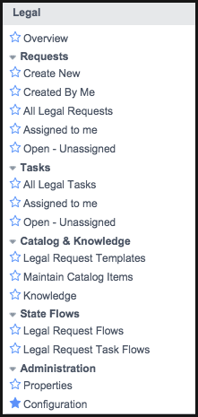

Legal Service Management
Contents
1 Overview
The Legal Service Management application lets you request changes to the operation and maintenance of your legal-related cases. The legal staff can then track these requests and make the necessary changes. Any user in the system can view all open legal requests. This gives your users a chance to see the legal issues that have already been reported before they submit a new request.
The Legal Service Management application is available starting with the Fuji release.
Request templates are linked to service catalog items; specifically, to record producers. When you make a request from the catalog, it uses the catalog item's associated template to create the actual legal request.
Legal Service Management is one in a suite of applications known as Service Management (SM) applications. SM applications, such as field service management and facilities service management allow you to manage business functions that require a request-type workflow where requests are approved, qualified, assigned, and completed.
When Service Management is activated, SM applications can be activated, as well as other features such as the Service Management Application Designer and the Service Management Portal.
2 Legal Service Management Process
Legal Service Management defaults to the request-driven process, where tasks can be assigned to a request; however, closing all tasks will not automatically close the request. You can switch to the task-driven process if you require multiple tasks to be performed before the request can be considered complete. The legal service management process is as follows:
- Users submit legal requests through the service catalog.
- Based on settings in the Legal Service Management Configuration, the request transitions through states based on actions performed through the request.
- When the request has been fulfilled by the legal team, the request is closed.
3 Roles
| Role Title [Name] | Description |
|---|---|
| Legal administrator
[legal_admin] |
Legal administrators can qualify and dispatch requests. |
| Legal agent
[legal_agent] |
Performs the work necessary to answer legal requests. |
| Legal dispatcher
[legal_dispatcher] |
Schedules and assigns the tasks to legal staff. |
4 Menus and Modules
Activating this feature adds the Legal menu to the application navigator with the modules listed below. It also adds modules to the Self-Service application menu.
|  | Under the Legal application menu:
|
Under the Self-Service application menu:
|
{kind=link}
{kind=link}
5 Activating the Legal Application
Legal Service Management is available as a separate subscription.
To purchase a subscription, contact your ServiceNow account manager. After purchasing the subscription, activate the plugin within the production instance.
You can evaluate the feature on a sub-production instance without charge by activating it within the instance.
| Click the plus to expand instructions for activating a plugin. |
|---|
|
If you have the admin role, use the following steps to activate the plugin.
|
5.1 Activating Legal Service Management for the SM CMS Portal
Legal Service Management can be added to the Service Management CMS portal by activating the following plugins.
| Plugin | ID | Description |
|---|---|---|
| Service Management Core | com.snc.enterprise_service_management.cms | Allows you to add Service Management applications, such as legal service management to the Service Management CMS Portal. Activation of this plugin on production instances may require a separate license. Contact ServiceNow for details |
| Legal Service Management CMS Portal | com.snc.legal.service.automation.cms | Displays the Legal Service Management application on the Service Management portal. Activation of this plugin on production instances may require a separate license. Contact ServiceNow for details. |